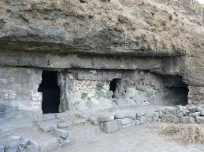
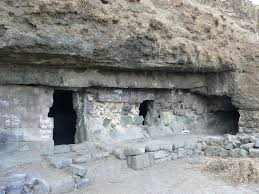

लोहगड
कबर
सदर
घोड्यांच्य पागा
 

कबर :- ही कबर औरंगजेबाच्या मुलीची आसावी अशी इतिहासात नोंद आढळते. तिच्या स्मरणार्थ ही कबर बांधली आसावी. तिच्या नावाचा उल्लेख इतिहासात आढळला नाही.
सदर :- शेजारील वास्तू ही शिवकालीन सदरेचे भग्नावशेष आहेत. या सदरेचा उपयोग शिवकाळामध्ये न्यायनिवाडा करण्यासाठी केला जात असे. परंतु परकीय आक्रमणांमुळे सद्यस्थितीत या सदरेचे भग्नावशेष आढळतात.
घोड्यांच्य पागा :- ही लोहगडावरील एक नैसर्गिक गुहा आहे. येथे घोड्याच्या निवासाची व्यवस्था केली आहे. घोड्यांच्या चाऱ्यासाठी खड्डे केलेले दिसून येतात. यामध्येच घोड्यांच्या पाणी पिण्याची व्यवस्था देखील केली आहे. तसेच आतील बाजुस असलेल्या खोलीचा वापर घोड्यांचे अन्न साठवुन ठेवण्यासाठी केला जात असावा असा अंदाज आहे.
वाड्याची जागा :- येथेच सदरेच्या बाजूला महल आसावा असे वास्तुरचणे वरुण समजते. तिथे पाण्याचे उत्तम नियोजन केलेले आढळते.